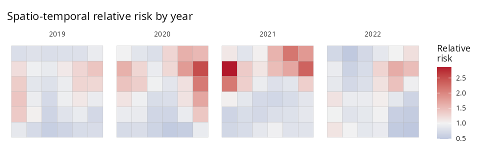

When the same regions are observed at several time points, add
time = the name of the time column and
sdalgcp() fits a separable space-time SDA-LGCP. The spatial
scale phi is estimated alongside a temporal Matern range
nu.
The data
One row per region and time, with the geometry repeated. Here, four years on a 6×6 lattice:
library(SDALGCP2)
library(sf)
set.seed(7)
shp <- st_sf(geometry = st_make_grid(
st_as_sfc(st_bbox(c(xmin = 0, ymin = 0, xmax = 18, ymax = 18))), n = c(6, 6)))
N <- nrow(shp); times <- 2019:2022; T <- length(times)
# simulate space-time counts (separable covariance) ...
dat <- st_sf(
data.frame(cases = y, x1 = x1, pop = pop, year = rep(times, each = N)),
geometry = st_geometry(shp)[rep(seq_len(N), T)])Fit
Internally the likelihood never forms the covariance — it uses the Kronecker identities and — so it scales to many regions and times.
Map relative risk by time
predict() returns region-by-time matrices and a long
table:
pred <- predict(fit)
str(pred$ARR_mean) # N x T matrix of covariate-adjusted relative risk
# join one time slice back to the geometry to map, or facet all of them:
library(ggplot2)
maps <- do.call(rbind, lapply(seq_len(T), function(t) {
g <- shp; g$RR <- pred$ARR_mean[, t]; g$year <- times[t]; g
}))
ggplot(maps) +
geom_sf(aes(fill = RR), color = "grey70", linewidth = 0.1) +
facet_wrap(~year, nrow = 1) +
scale_fill_gradient2(midpoint = 1, low = "#2166AC", mid = "grey95", high = "#B2182B")
The hotspot in the upper-right intensifies through 2020–2021 and recedes by 2022 — the kind of space-time pattern that area-by-area or year-by-year analyses miss.